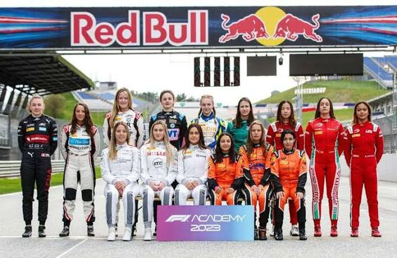

Kategori ini dirancang untuk memberi pengemudi akses ke lebih banyak waktu lintasan, balapan dan pengujian, serta dukungan persiapan teknis, fisik, dan mental. Hal ini akan memberikan para talenta muda di kategori junior akses ke tingkat pengalaman dasar yang diperlukan untuk maju ke Formula 3 dan bergabung dalam Jalan Menuju F1. Menyusul musim perdananya pada tahun 2023, kampanye kedua seri khusus putri akan dimulai di Arab Saudi pada 7 Maret dan berakhir di Abu Dhabi pada 8 Desember. Kalender ini dirancang untuk menjangkau tiga benua – Eropa, Asia dan Amerika Utara – dan akan menampilkan perpaduan sirkuit jalanan dan sirkuit tradisional.
